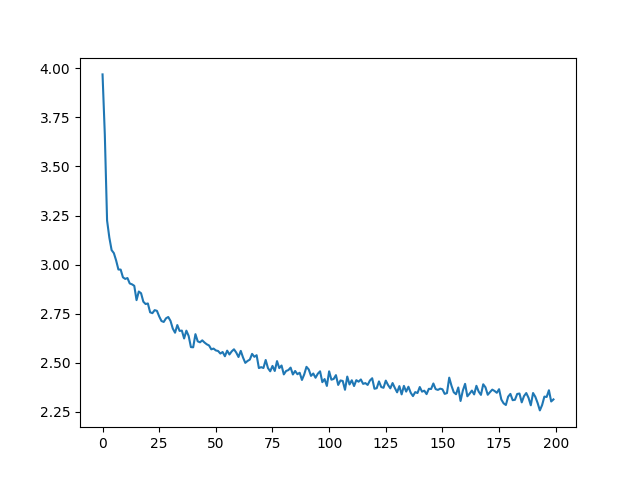

使用字符级别特征的RNN网络生成名字
译者：hhxx2015
校对者：hijkzzz
作者: Sean Robertson
在上一个 例子 中我们使用RNN网络对名字所属的语言进行分类。 这一次我们会反过来根据语言生成名字。
> python sample.py Russian RUS
Rovakov
Uantov
Shavakov
> python sample.py German GER
Gerren
Ereng
Rosher
> python sample.py Spanish SPA
Salla
Parer
Allan
> python sample.py Chinese CHI
Chan
Hang
Iun
我们仍使用只有几层线性层的小型RNN。 最大的区别在于，这里不是在读取一个名字的所有字母后预测类别，而是输入一个类别之后在每一时刻输出一个字母。 循环预测字符以形成语言通常也被称为“语言模型”。（也可以将字符换成单词或更高级的结构进行这一过程）
阅读建议:
我默认你已经安装好了PyTorch，熟悉Python语言，理解“张量”的概念：
- https://pytorch.org/ PyTorch安装指南
- Deep Learning with PyTorch: A 60 Minute Blitz PyTorch入门
- Learning PyTorch with Examples 一些PyTorch的例子
- PyTorch for Former Torch Users Lua Torch 用户参考
事先学习并了解RNN的工作原理对理解这个例子十分有帮助:
- The Unreasonable Effectiveness of Recurrent Neural Networks 展示了很多实际的例子
- Understanding LSTM Networks 是关于LSTM的，但也提供有关RNN的说明
准备数据
点击这里下载数据 并将其解压到当前文件夹。
有关此过程的更多详细信息，请参阅上一个教程。
简而言之，有一些纯文本文件data/names/[Language].txt，它们的每行都有一个名字。
我们按行将文本按行切分得到一个数组，将Unicode编码转化为ASCII编码，最终得到{language: [names ...]}格式存储的字典变量。
from __future__ import unicode_literals, print_function, division
from io import open
import glob
import os
import unicodedata
import string
all_letters = string.ascii_letters + " .,;'-"
n_letters = len(all_letters) + 1 # Plus EOS marker
def findFiles(path): return glob.glob(path)
# Turn a Unicode string to plain ASCII, thanks to https://stackoverflow.com/a/518232/2809427
def unicodeToAscii(s):
return ''.join(
c for c in unicodedata.normalize('NFD', s)
if unicodedata.category(c) != 'Mn'
and c in all_letters
)
# Read a file and split into lines
def readLines(filename):
lines = open(filename, encoding='utf-8').read().strip().split('\n')
return [unicodeToAscii(line) for line in lines]
# Build the category_lines dictionary, a list of lines per category
category_lines = {}
all_categories = []
for filename in findFiles('data/names/*.txt'):
category = os.path.splitext(os.path.basename(filename))[0]
all_categories.append(category)
lines = readLines(filename)
category_lines[category] = lines
n_categories = len(all_categories)
if n_categories == 0:
raise RuntimeError('Data not found. Make sure that you downloaded data '
'from https://download.pytorch.org/tutorial/data.zip and extract it to '
'the current directory.')
print('# categories:', n_categories, all_categories)
print(unicodeToAscii("O'Néàl"))
Out:
# categories: 18 ['Italian', 'German', 'Portuguese', 'Chinese', 'Greek', 'Polish', 'French', 'English', 'Spanish', 'Arabic', 'Czech', 'Russian', 'Irish', 'Dutch', 'Scottish', 'Vietnamese', 'Korean', 'Japanese']
O'Neal
构造神经网络
这个神经网络比 上一个RNN教程中的网络增加了额外的类别张量参数，该参数与其他输入连接在一起。
类别可以像字母一样组成one-hot向量构成张量输入。
我们将输出作为下一个字母是什么的可能性。采样过程中，当前输出可能性最高的字母作为下一时刻输入字母。
在组合隐藏状态和输出之后我增加了第二个linear层o2o，使模型的性能更好。当然还有一个dropout层，参考这篇论文随机将输入部分替换为0给出的参数（dropout=0.1）来模糊处理输入防止过拟合。
我们将它添加到网络的末端，故意添加一些混乱使采样特征增加。

import torch
import torch.nn as nn
class RNN(nn.Module):
def __init__(self, input_size, hidden_size, output_size):
super(RNN, self).__init__()
self.hidden_size = hidden_size
self.i2h = nn.Linear(n_categories + input_size + hidden_size, hidden_size)
self.i2o = nn.Linear(n_categories + input_size + hidden_size, output_size)
self.o2o = nn.Linear(hidden_size + output_size, output_size)
self.dropout = nn.Dropout(0.1)
self.softmax = nn.LogSoftmax(dim=1)
def forward(self, category, input, hidden):
input_combined = torch.cat((category, input, hidden), 1)
hidden = self.i2h(input_combined)
output = self.i2o(input_combined)
output_combined = torch.cat((hidden, output), 1)
output = self.o2o(output_combined)
output = self.dropout(output)
output = self.softmax(output)
return output, hidden
def initHidden(self):
return torch.zeros(1, self.hidden_size)
训练
训练准备
首先，构造一个可以随机获取成对训练数据(category, line)的函数。
import random
# Random item from a list
def randomChoice(l):
return l[random.randint(0, len(l) - 1)]
# Get a random category and random line from that category
def randomTrainingPair():
category = randomChoice(all_categories)
line = randomChoice(category_lines[category])
return category, line
对于每个时间步长（即，对于要训练单词中的每个字母），网络的输入将是“（类别，当前字母，隐藏状态）”，输出将是“（下一个字母，下一个隐藏状态）”。
因此，对于每个训练集，我们将需要类别、一组输入字母和一组输出/目标字母。
在每一个时间序列，我们使用当前字母预测下一个字母，所以训练用的字母对来自于一个单词。例如 对于 "ABCD<EOS>"，我们将创建（“A”，“B”），（“B”，“C”），（“C”，“D”），（“D”，“EOS”））。

类别张量是一个<1 x n_categories>尺寸的one-hot 向量
训练时，我们在每一个时间序列都将其提供给神经网络。这是一种选择策略，也可选择将其作为初始隐藏状态的一部分，或者其他什么结构。
# One-hot vector for category9
def categoryTensor(category):
li = all_categories.index(category)
tensor = torch.zeros(1, n_categories)
tensor[0][li] = 1
return tensor
# One-hot matrix of first to last letters (not including EOS) for input
def inputTensor(line):
tensor = torch.zeros(len(line), 1, n_letters)
for li in range(len(line)):
letter = line[li]
tensor[li][0][all_letters.find(letter)] = 1
return tensor
# LongTensor of second letter to end (EOS) for target
def targetTensor(line):
letter_indexes = [all_letters.find(line[li]) for li in range(1, len(line))]
letter_indexes.append(n_letters - 1) # EOS
return torch.LongTensor(letter_indexes)
为了方便训练，我们将创建一个randomTrainingExample函数，该函数随机获取（类别，行）的对并将它们转换为所需要的（类别，输入，目标）格式张量。
# Make category, input, and target tensors from a random category, line pair
def randomTrainingExample():
category, line = randomTrainingPair()
category_tensor = categoryTensor(category)
input_line_tensor = inputTensor(line)
target_line_tensor = targetTensor(line)
return category_tensor, input_line_tensor, target_line_tensor
训练神经网络
和只使用最后一个时刻输出的分类任务相比，这次我们每一个时间序列都会进行一次预测，所以每一个时间序列我们都会计算损失。
autograd的神奇之处在于您可以在每一步中简单地累加这些损失，并在最后反向传播。
criterion = nn.NLLLoss()
learning_rate = 0.0005
def train(category_tensor, input_line_tensor, target_line_tensor):
target_line_tensor.unsqueeze_(-1)
hidden = rnn.initHidden()
rnn.zero_grad()
loss = 0
for i in range(input_line_tensor.size(0)):
output, hidden = rnn(category_tensor, input_line_tensor[i], hidden)
l = criterion(output, target_line_tensor[i])
loss += l
loss.backward()
for p in rnn.parameters():
p.data.add_(-learning_rate, p.grad.data)
return output, loss.item() / input_line_tensor.size(0)
为了跟踪训练耗费的时间，我添加一个timeSince（timestamp）函数，它返回一个人类可读的字符串：
import time
import math
def timeSince(since):
now = time.time()
s = now - since
m = math.floor(s / 60)
s -= m * 60
return '%dm %ds' % (m, s)
训练过程和平时一样。多次运行train，等待几分钟，每print_every次打印当前时间和损失。在 all_losses 中保留每plot_every次的平均损失，以便稍后进行绘图。
rnn = RNN(n_letters, 128, n_letters)
n_iters = 100000
print_every = 5000
plot_every = 500
all_losses = []
total_loss = 0 # Reset every plot_every iters
start = time.time()
for iter in range(1, n_iters + 1):
output, loss = train(*randomTrainingExample())
total_loss += loss
if iter % print_every == 0:
print('%s (%d %d%%) %.4f' % (timeSince(start), iter, iter / n_iters * 100, loss))
if iter % plot_every == 0:
all_losses.append(total_loss / plot_every)
total_loss = 0
Out:
0m 21s (5000 5%) 2.5152
0m 43s (10000 10%) 2.7758
1m 4s (15000 15%) 2.2884
1m 25s (20000 20%) 3.2404
1m 47s (25000 25%) 2.7298
2m 8s (30000 30%) 3.4301
2m 29s (35000 35%) 2.2306
2m 51s (40000 40%) 2.5628
3m 12s (45000 45%) 1.7700
3m 34s (50000 50%) 2.4657
3m 55s (55000 55%) 2.1909
4m 16s (60000 60%) 2.1004
4m 38s (65000 65%) 2.3524
4m 59s (70000 70%) 2.3339
5m 21s (75000 75%) 2.3936
5m 42s (80000 80%) 2.1886
6m 3s (85000 85%) 2.0739
6m 25s (90000 90%) 2.5451
6m 46s (95000 95%) 1.5104
7m 7s (100000 100%) 2.4600
损失数据作图
从all_losses得到历史损失记录，反映了神经网络的学习情况：
import matplotlib.pyplot as plt
import matplotlib.ticker as ticker
plt.figure()
plt.plot(all_losses)

网络采样
我们每次给网络提供一个字母并预测下一个字母是什么，将预测到的字母继续输入，直到得到EOS字符结束循环。
- 用输入类别、起始字母和空隐藏状态创建输入张量。
- 用起始字母构建一个字符串变量
output_name 得到最大输出长度，
- 将当前字母传入神经网络
- 从前一层得到下一个字母和下一个隐藏状态
- 如果字母是EOS，在这里停止
- 如果是一个普通的字母，添加到
output_name变量并继续循环
返回最终得到的名字单词
另一种策略是，不必给网络一个起始字母，而是在训练中提供一个“字符串开始”的标记，并让网络自己选择起始的字母。
max_length = 20
# Sample from a category and starting letter
def sample(category, start_letter='A'):
with torch.no_grad(): # no need to track history in sampling
category_tensor = categoryTensor(category)
input = inputTensor(start_letter)
hidden = rnn.initHidden()
output_name = start_letter
for i in range(max_length):
output, hidden = rnn(category_tensor, input[0], hidden)
topv, topi = output.topk(1)
topi = topi[0][0]
if topi == n_letters - 1:
break
else:
letter = all_letters[topi]
output_name += letter
input = inputTensor(letter)
return output_name
# Get multiple samples from one category and multiple starting letters
def samples(category, start_letters='ABC'):
for start_letter in start_letters:
print(sample(category, start_letter))
samples('Russian', 'RUS')
samples('German', 'GER')
samples('Spanish', 'SPA')
samples('Chinese', 'CHI')
Out:
Rovanik
Uakilovev
Shaveri
Garter
Eren
Romer
Santa
Parera
Artera
Chan
Ha
Iua
练习
- 尝试其它 （类别->行） 格式的数据集，比如:
- 系列小说 -> 角色名称
- 词性 -> 单词
- 国家 -> 城市
- 尝试“start of sentence” 标记，使采样的开始过程不需要指定起始字母
- 通过更大和更复杂的网络获得更好的结果
- 尝试
nn.LSTM和nn.GRU层 - 组合这些 RNN构造更复杂的神经网络
- 尝试